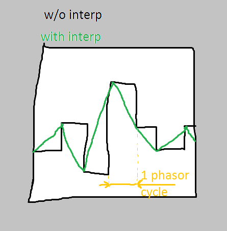

Hello everyone, i feel i'm stumbling over a pebble and i might need some advice.
I'm making a mandelbrot inspired oscillator (basically it iterates over the fundamental equation z' = z^2 + c and outputs the result).
I also found a way to make it tuned (iterating with a certain frequency). To do this i just copied the osc/phasor code and tweaked it to my needs. With this implementation the result looks like a wavetable fed into a sample/hold module (or maybe table/read with no interpolation and a low number of samples).
Similarly with table/read objects, i'd like to implement some way to interpolate between two consecutive values (and this should be easy, since i already have a phasor that drives the pitch)
See the image for some reference

i tried to write some code, but it just does not work like i want, no matter how much tweaking i do (here you have it:)
Phase = uint32_t
phase_t = int32_t
re, im ,re_interp, im_interp = int32_tint32_t phase_t=Phase>>6; // make the phase variable signed int (so i can use it inside SMMUL) - Also, i'm making it smaller
outlet_Re=(___SMMUL((re>>1)-(re_interp>>1),phase_t)) +(re_interp)<<5;
outlet_Im=(___SMMUL((im>>1)-(im_interp>>1),phase_t)) +(im_interp)<<5;
If you feel it you can try the object here: test_fractal.axp (11.7 KB)
Any advice on how to fix this?